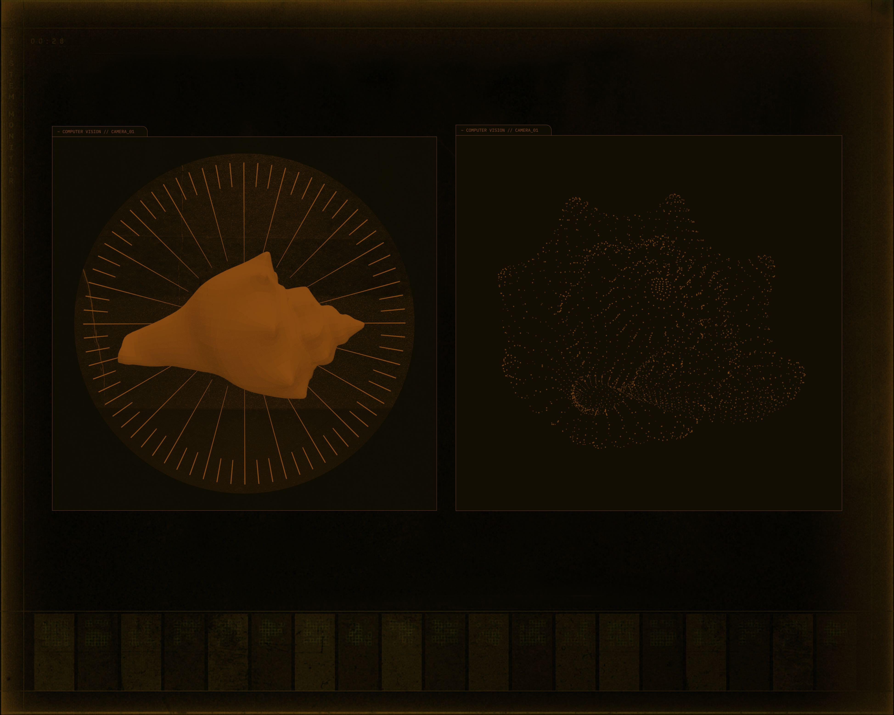
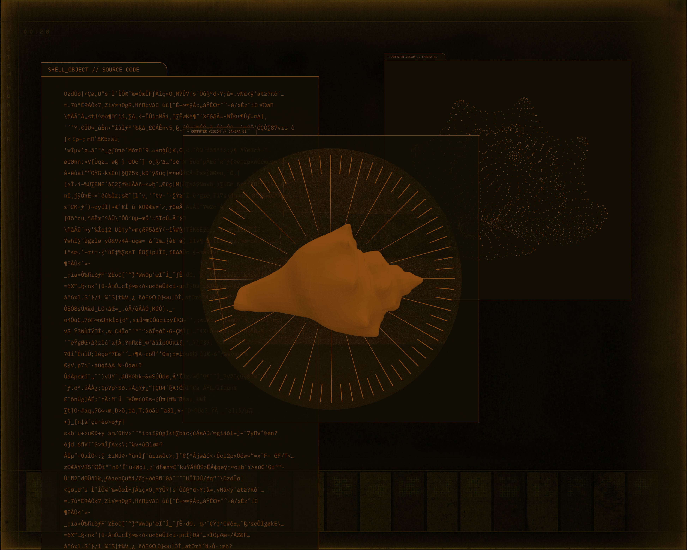
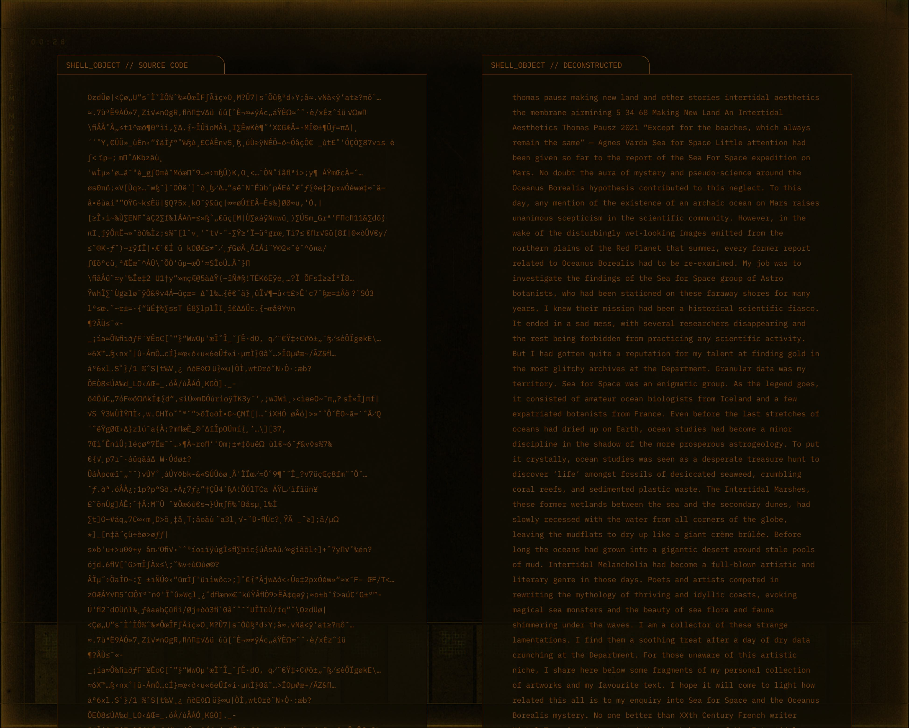
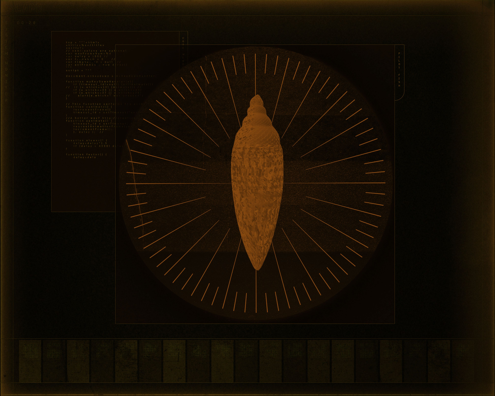

Shell Reader





KAMIL IZARET & THOMAS PAUSZ
MAKING NEW LAND
For this project led by Thomas Pausz, the idea was to design the User Interfaces of fictional technologies. Thomas wrote a fiction that explores post-ocean world's biology, in this writing there are some futuristic technologies involved.
My part of the work was to conceive the UIs, create Human-Computer Interactions that would match this fictional universe.
Making New Land is an essay in theory-fiction set in a near future, where the oceans have disappeared. In these devastated landscapes, a first person narrator investigates unsolved biological enigmas on Earth and on Mars. In the footsteps of a fictional group of Anarcho-botanists called Sea for Space, the story alternates a melancholic longing for the beauty of intertidal and coastal lifeforms with futuristic visions of new species engineered by humans as new companions.
The scenario explores archetypal figures of plant-human coexistence: from the botanical gaze to a nostalgic longing for connection, and from the hubris of genetical engineering to the dream of a post-humanism communion with the vegetal. The fictional story is interwoven with scholarly references and a critical discussions of artistic and literary works dealing with the fauna, flora and mythologies of the seaside, which form the outlines of an 'Intertidal Aesthetics'.
@kamilizaret
@kamilizaret
GITHUB
@kxmil
kamil.izaret@gmail.com
PHONE
+33.629.714.204